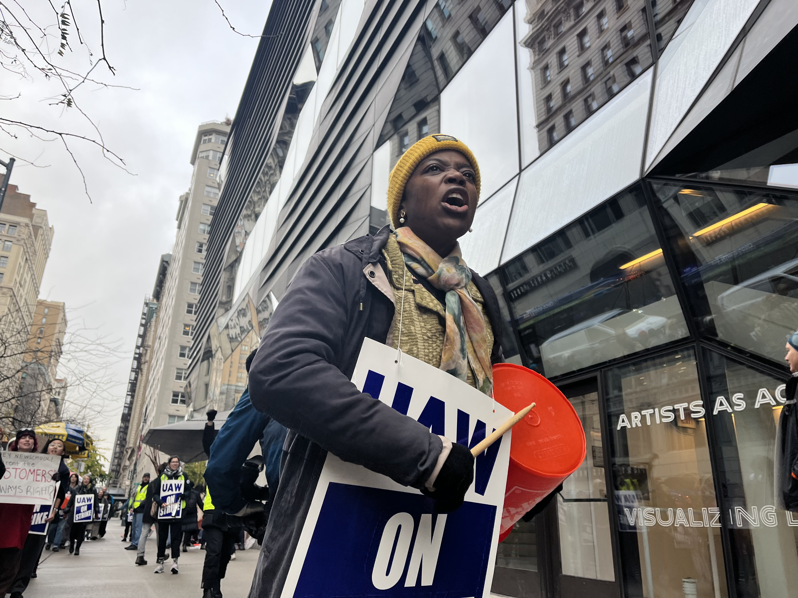

Over the past year, labor movements across the country have been extensively covered by the media. Numerous stories have suggested that there has been an uptick in momentum for workers demanding rights from around the country.
That increased attention doesn’t quite bear out in the numbers.
According to the Bureau of Labor Statistics, with 21 strikes involving over 1,000 people, 2022 has had more workers on strike than in 2021 and 2020. However, 21 is still less than the years leading up to the pandemic, and far less than the 187 strikes of that magnitude that happened in 1980, before the precipitous decline in labor activity.
Peter Orazem, a labor economics professor at Iowa State University, agrees that the recent attention given to labor is disproportionate to the actual surge in labor activity. But he also believes there is a good reason to stay focused on union behaviors.
“If you look at the economic conditions for strikes, they're quite strong right now in part because firms are not able to fill all their positions,” Orazem said. “We're still near 4 million unfilled vacancies a month. In September 2022, we had 4.3 million unfilled vacancies. It's going to be quite easy to push for wages and benefits when the firm is begging for additional workers.”
Although the number of strikes in the past year does not represent an unprecedented peak, as much of the coverage would lead readers to believe, union membership and negotiations has risen, according to research done by the Cornell University School of Industrial and Labor Relations. There could be more activity in the years and months to come.